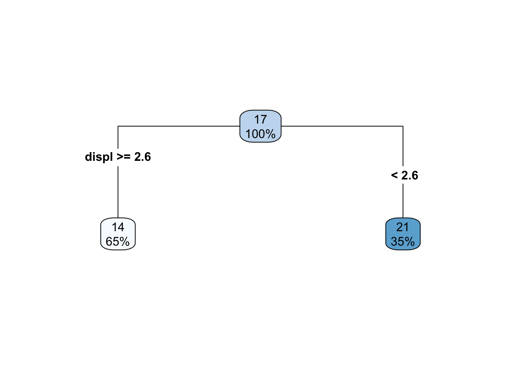
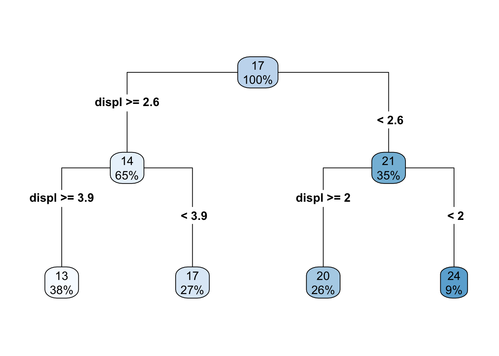
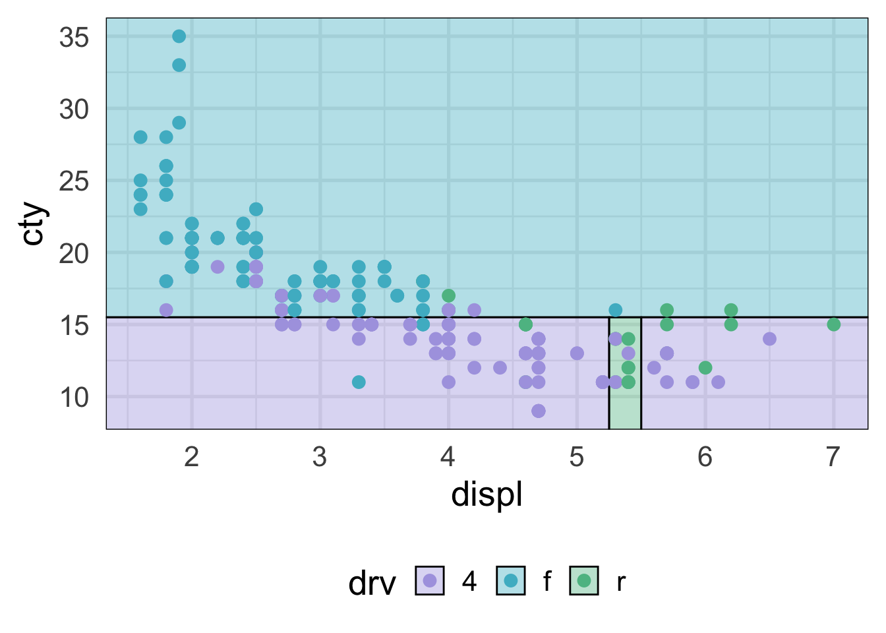

4.2 Visualizing decision trees
The decision tree itself is often helpful for understanding how predictions are made. Scatterplots can also be helpful in terms of viewing how the predictor space is being partitioned. For example, imagine we are fitting a model to the following data

In this case, we only have a single predictor variable, displ, but we can split on that variable multiple times. Let’s start with a single split, and we’ll build from there. The decision tree for a single split model (also called a “stump”) looks like this

So we are just splitting based on whether displ is greater than or equal to 2.6. How does this look in the scatterplot? Well, if the displ >= 2.6, it’s a horizontal line at 14, and if displ <= 2.6, it’s a horizontal line at 21.

What if we add one additional split? Well then the decision tree looks like this

and the scatterplot looks like this

As the number of splits increases, the fit to the data increases. However, the model can also quickly overfit and not generalize to new data well, which is why a single decision tree is often not the most performant model.
We can visualize classification problems with decision trees using scatterplots as well, as long as there are two continuous predictor variables. Sticking with our mpg dataset, let’s say we wanted to predict the drivetrain: front-wheel drive, rear-wheel drive, or four-wheel drive. The scatterplot would then look like this (assuming we’re now using displ and cty as predictor variables).

How does the predictor space get divided up? Let’s try first with a stump model. The tree looks like this
drv_stump <- rpart(drv ~ displ + cty, mpg,
control = list(maxdepth = 1))
rpart.plot(drv_stump, type = 4)
This model isn’t doing too well. It looks like we’re not capturing any of the rear-wheel drive cases. That of course makes sense, because we only have one split, so we can’t predict three different classes. Here’s what it looks like with the scatterplot
NOTE: There’s a bug (I think) in the package that currently means I have to flip the axes here. We should come back and change it when it’s fixed. See here: https://github.com/grantmcdermott/parttree/issues/5
library(parttree)
ggplot(mpg, aes(cty, displ)) +
geom_parttree(aes(fill = drv),
data = drv_stump,
alpha = 0.4,
flipaxes = TRUE) +
geom_point(aes(color = drv))
And what if we go with a more complicated model? Say, 3 splits? Then the tree looks like this.
drv_threesplits <- rpart(drv ~ displ + cty, mpg,
control = list(maxdepth = 3))
rpart.plot(drv_threesplits, type = 4)
And our predictor space can now be divided up better.
ggplot(mpg, aes(displ, cty)) +
geom_parttree(aes(fill = drv),
data = drv_threesplits,
alpha = 0.4,
flipaxes = TRUE) +
geom_point(aes(color = drv))
This looks considerably better and, although we still have some misclassification, that’s ultimately probably a good thing because we don’t want to start to overfit to our training data. Decision trees, like all models, should balance the bias-variance tradeoff. They are flexible and make few assumptions about the data, but that can also quickly lead to overfitting and poor generalizations to new data.